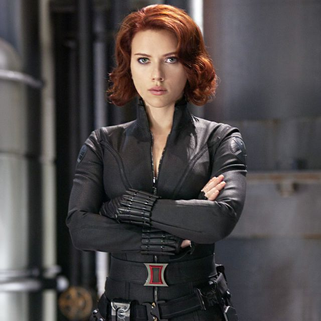
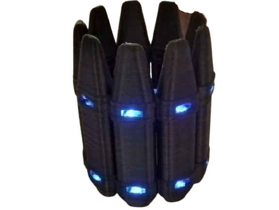
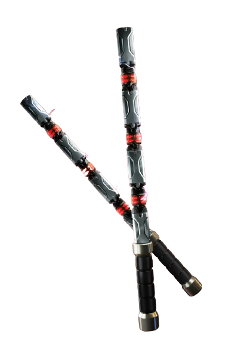
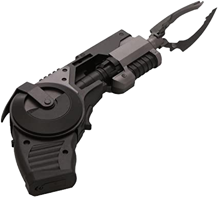

BLACKWIDOW
A medida que crecía, los talentos de Natasha llamaron la atención de la KGB, y fue reclutada en sus filas. Durante la WWII, Natasha fue secuestrada por la Mano, que buscaba convertirla en una maestra asesina con lavado de cerebro. Afortunadamente, fue rescatada por Capitán América y Wolverine. Durante la guerra, la joven Natasha sirvió en el ejército ruso, donde se enamoró de otro joven soldado llamado Nikolai. A pesar de su felicidad inicial, su unión no terminó felizmente. Nikolai murió en la guerra y la niña que concibieron no sobrevivió al nacimiento.Después de la Segunda Guerra Mundial, Natasha progresó en el Programa de la Viuda Negra, donde las jóvenes como ella fueron condicionadas para convertirse en agentes durmientes


